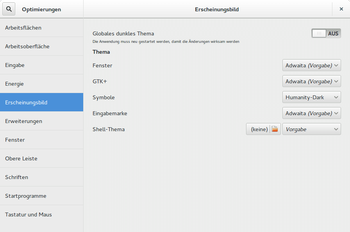

Themes
Dieser Artikel wurde für die folgenden Ubuntu-Versionen getestet:
Ubuntu 14.04 Trusty Tahr
Zum Verständnis dieses Artikels sind folgende Seiten hilfreich:
 Mittlerweile gibt es viele Möglichkeiten, das Aussehen der GNOME Shell zu verändern bzw. anzupassen. Globale Anpassungen sämtlicher Bedienelemente werden dabei als "Themes" bereitgestellt, was man sinngemäß mit "(Design-)Thema" oder "Gesamterscheinungsbild" übersetzen kann.
Mittlerweile gibt es viele Möglichkeiten, das Aussehen der GNOME Shell zu verändern bzw. anzupassen. Globale Anpassungen sämtlicher Bedienelemente werden dabei als "Themes" bereitgestellt, was man sinngemäß mit "(Design-)Thema" oder "Gesamterscheinungsbild" übersetzen kann.
Man muss hierbei aber zwischen dem GTK+-3.x-Thema, also dem Hauptthema der Fenster, und dem "GNOME-Shell-Thema" unterscheiden, welches das Panel und den Aktivitäten-Modus darstellt. Dabei ist zu beachten, dass viele vorgestellte Themen nicht nur ein verändertes "GNOME-Shell-Thema" sondern auch ein alternatives "GTK+-3.x-Thema" verwenden. Dieser Artikel beschreibt nur die Installation eines alternativen "GNOME-Shell-Designs", das Ändern des GTK+-3.x-Designs wird im Artikel GTK+ Design wechseln behandelt.
Vorbereitungen¶
Um das Shell-Thema verändern zu können, benötigt man zum einen das Programm GNOME Tweak Tool und zum anderen die GNOME Shell Erweiterung User Theme  , welche im Paket gnome-shell-extensions enthalten ist.
, welche im Paket gnome-shell-extensions enthalten ist.
Falls man Ubuntu GNOME installiert hat, sind beide Pakete schon installiert, ansonsten muss man folgende Pakete nach installieren[1]:
gnome-tweak-tool (universe)
gnome-shell-extensions (universe)
 mit apturl
mit apturl
Paketliste zum Kopieren:
sudo apt-get install gnome-tweak-tool gnome-shell-extensions
sudo aptitude install gnome-tweak-tool gnome-shell-extensions
Als nächstes muss mit mit Hilfe des GNOME Tweak Tool[2] im Reiter "Erweiterungen" die Erweiterung "User themes" aktiviert werden.
Thema suchen¶
In den Ubuntu-Paketquellen selbst gibt es keine alternativen GNOME-Shell-Themen, stattdessen kann man zum Beispiel auf gnome-look.org unter der Rubrik "GNOME Shell" nachschauen.
Achtung!
Man muss immer darauf achten, dass die verwendete GNOME-Shell-Version identisch mit der GNOME-Shell-Version des Themas ist. Daher sollte man sich vor der Installation die Beschreibung des Themas und die "readme"-Datei genau durchlesen.
Thema installieren¶
Nachdem man sich für ein kompatibles Thema entschieden hat, folgt man der Installationsanleitung in der Beschreibung oder der README-Datei. Allgemein gibt es zwei Speicherorte für Themen:
Thema lokal installieren¶
Möchte man das Thema nur für den eigenen Benutzer verwenden, dann entpackt man das Thema und verschiebt den Order, welches das Thema enthält, nach ~/.themes/ (in manchen Versionen auch ~/.local/share/themes/).
Hinweis:
Falls der Ordner ~/.themes/ bzw. ~/.local/share/themes/ noch nicht existiert, muss dieser vorher noch angelegt werden.
Thema global installieren¶
Soll das Thema hingegen für alle Benutzer zur Verfügung stehen, muss der entpackte Ordner mit dem Thema mit root-Rechten[3] in den Ordner /usr/share/themes/ verschoben werden und im Terminal[4] mit dem Befehl
sudo chmod -R 755 /usr/share/themes/[NAME DES THEMAS]
global verfügbar gemacht werden.
Thema aktivieren¶

GNOME Tweak Tool¶
Nachdem man das Thema erfolgreich installiert hat, sollte man im GNOME Tweak Tool im Reiter "Erscheinungsbild" unter dem Punkt "Shell-Thema" das gewünschte Thema einstellen können.
dconf/gsettings¶
Man kann das Shell-Thema auch mit Hilfe des dconf-Editors ändern[5], indem man im Schema "org.gnome.shell.extensions.user-theme" den Schlüssel "name" durch den Ordnernamen des gewünschten Themas ersetzt. Also falls das Thema im lokalen Ordner ~/.themes/ unter dem Namen ~/.themes/Mein Thema 1 gespeichert ist, lautet der Schlüssel "Mein Thema 1"
Experten-Info:
Man kann das Thema auch durch die Eingabe folgendes Befehls im Terminal ändern:
gsettings set org.gnome.shell.extensions.user-theme name "NAME DES ORDNERS DES THEMAS"
Thema deinstallieren¶
Um ein Thema zu deinstallieren, genügt es, nach dem Wechsel zu einem anderen Thema oder zum Standardthema "(Vorgabe)" den Ordner, in dem das Thema gespeichert ist, wieder zu löschen.
Links¶
GNOME Shell
 - Übersichtsartikel zur GNOME Shell
- Übersichtsartikel zur GNOME ShellGTK+/Design wechseln - das GTK+ Thema auswechseln
gnome-look.org
- GNOME Shell Themes
- Erstellt mit Inyoka
-
 2004 – 2017 ubuntuusers.de • Einige Rechte vorbehalten
2004 – 2017 ubuntuusers.de • Einige Rechte vorbehalten
Lizenz • Kontakt • Datenschutz • Impressum • Serverstatus -
Serverhousing gespendet von